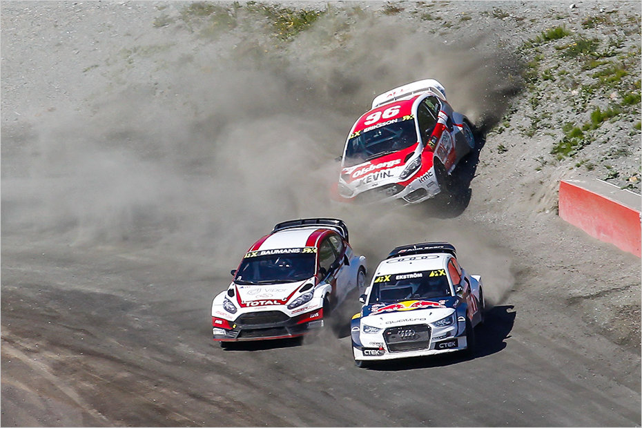
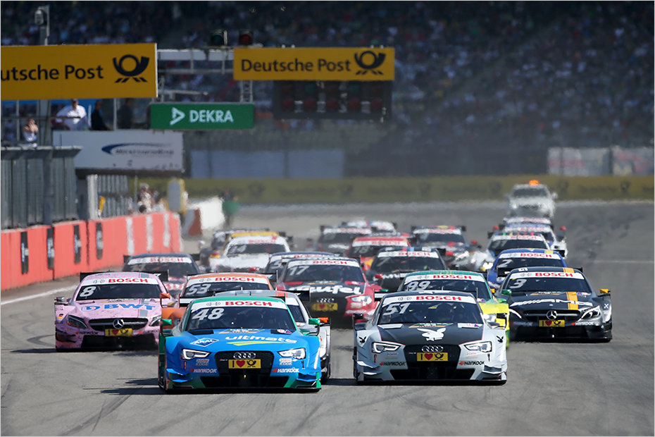
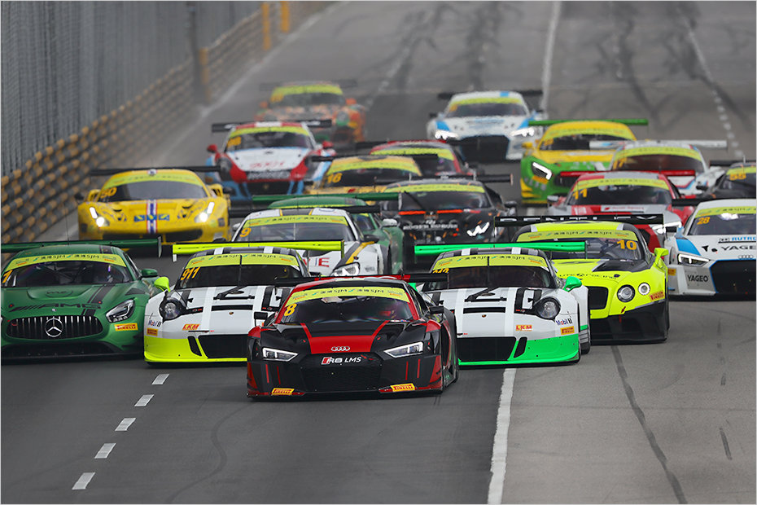
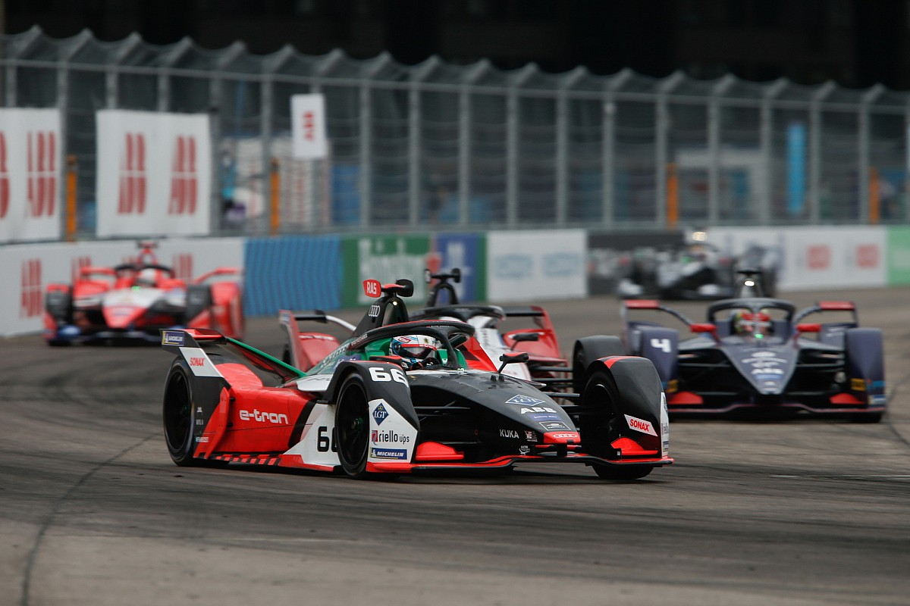
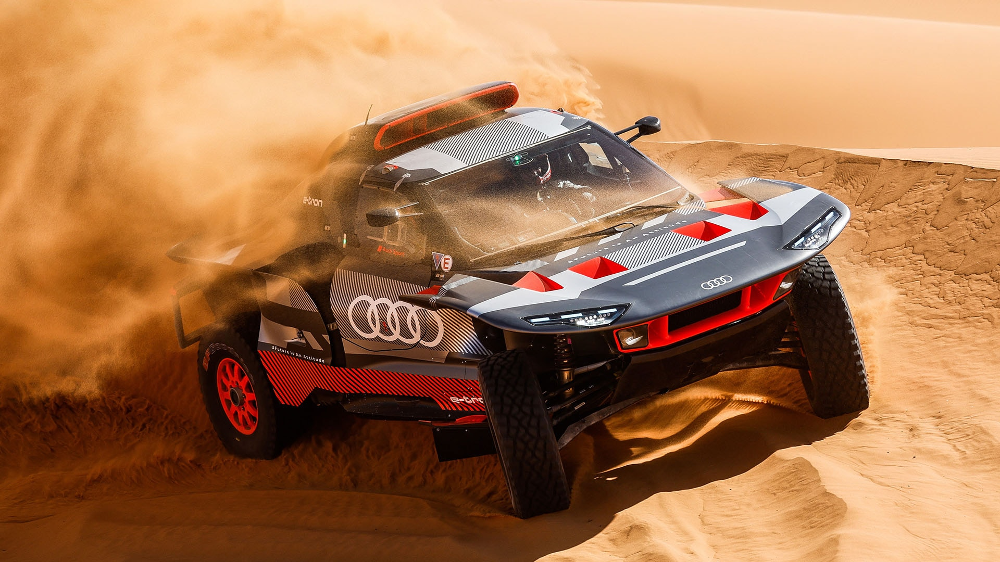
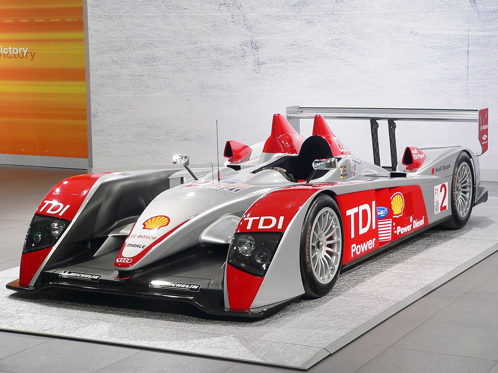
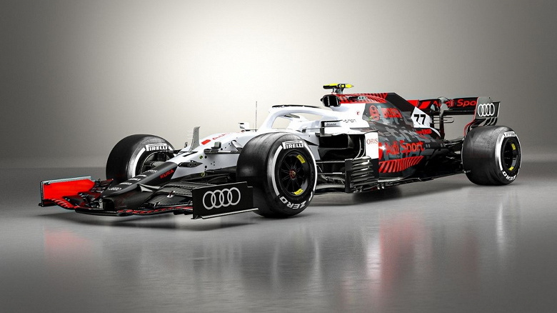

Audi Sport - живе втілення гоночної траси
Кожну мить, кожна віха та інженерне досягнення, які забезпечили світове визнання Audi Sport, знаходять своє відображення у моделях Audi. Гоночна траса завжди забезпечувала основу для передових розробок, які потім використовувалися при створенні кожного з наших автомобілів. Коли ви заводите двигун автомобіля Audi, нова технологія оживає на кінчиках ваших пальців.
Автомобільні змагання в яких Audi Sport бере участь:
World RX RallycrossЧемпіонат світу з ралі-кросу (FIA World Rallycross Championship, офіційна абревіатура World RX або WRX) — чемпіонат світу з ралі-кросу, серія автомобільних змагань, які організовує FIA, промоутером яких є медіаконцерн IMGruen зі США. Audi Sport має 3 кубки. Участь приймає допрацьована модель A1. |
 |
|  |
Гонки DTMDeutsche Tourenwagen Masters (Дойче Туренваґен Мастерс, DTM) — чемпіонат Німеччини серед легкових автомобілів (силует-прототипів). Проводиться з 2000 року, відроджений на базі Deutsche Tourenwagen Meisterschaft ("старого DTM") (1984-1996), через що також може називатися "новим DTM". За останні 10 років Audi Sport забрали 22 кубки. Іноді навіть весь подіум складався з Ауді. Беруть участь багато допрацьованих моделей, таких як: A4, S5, R8. |
Автозмагання серії GT3Група GT3, технічно відома як Cup Grand Touring Cars і зазвичай звана просто GT3, є набором правил, підтримуваних Міжнародною автомобільною федерацією (FIA) для гоночних автомобілів Grand Tourer, призначених для використання в різних серіях автоперегонів по всьому світу. Категорія GT3 була спочатку створена в 2005 році Групою СРО як третій ступінь у сходах гранд-турингового автоспорту, нижче категорій Групи GT1 і GT2, які використовувалися в Чемпіонаті FIA GT СРО, і запустила свою власну серію в 2006 році під назвою FIA hip. Найвідоміша модель, яка приймає участь - це Audi R8 LMS, що складає серйозну конкуренцію іншим болідам. |
 |
|  |
Formula EФормула E (англ. ABB FIA Formula-E World Championship) — клас автоперегонів, у яких використовуються електромобілі з відкритими колесами, головний турнір — чемпіонат ФІА Формула E. Клас заснований в 2012 році і санкціонований міжнародної автомобільної федерацією, метою його створення стало прагнення створити лабораторію для досліджень і розробки електричних транспортних засобів, що допомагає прискорити популяризацію електромобілів, а також виступає в якості двигуна інновацій та розвитку у поєднанні з технологіями і духом автоспорту. У грудні 2019 року перегони отримали статус Чемпіонату світу, який почне діяти з сезону 2020-21. |
Rally DakarРалі Дакар (раніше було відомо як «Ралі Париж — Дакар») — щорічний марафонський трансконтинентальний ралі-рейд. Проводиться з 1978 року. Як правило, фінішує в столиці Сенегалу — місті Дакар. Команда Audi Sport приймала участь у ралі Дакар 2023 з моделлю Audi RS Q e-tron з концепцією електроприводу і здобула загалом 14 подіумів за 15 днів змагань, включаючи пролог. Крім того, пілоти Audi вперше протягом трьох днів очолювали ралі в Саудівській Аравії. |
 |
|  |
24 години Le-Mann24 години Ле-Мана (фр. 24 Heures du Mans) - автомобільна гонка на витривалість [1], що щорічно проходить з 1923 року недалеко від міста Ле-Ман у Франції. Гонку також часто називають «Гран-прі витривалості та економічності». Команди змушені шукати баланс між швидкістю та надійністю автомобілів, які мають протриматися протягом 24 годин без механічних пошкоджень, а також раціонально використовувати витратні матеріали, такі як паливо, шини та гальмівні колодки. Заодно перевіряється і витривалість пілотів, яким найчастіше доводиться проводити за кермом до чотирьох годин поспіль, поки їх не змінить партнер за командою на черговому піт-стопі. Чекаючи на свою чергу, пілоти встигають перекусити і трохи відпочити. За чинними правилами кожним автомобілем, який бере участь у гонці, повинні по черзі керувати не менше трьох пілотів. |
Formula 1Audi офіційно оголосила про повернення до чемпіонату Formula 1, яке відбудеться у 2026 році, — зроблено цю заяву через 10 днів після того, як Всесвітня рада FIA затвердила регламент на силові установки, що діятиме у 2026 році. Загалом двигуни залишаться приблизно такими, як зараз — V6 з об'ємом 1,6 л, турбонаддувом, системами ERS та MGU-K. Важлива відмінність - відмова від теплового генератора MGU-H, досить складної системи за своєю суттю. Разом з тим, потужність MGU-H підвищується до 350 кВт, а в сумі нова силова установка видаватиме більше 1000 к.с. «Автоспорт – невід'ємна частина ДНК Audi, Формула 1 – це одночасно і глобальна сцена для нашого бренду, і дуже складна лабораторія розробок. Поєднання високої продуктивності та конкуренції завжди є рушійною силою інновацій та передачі технологій у нашій галузі. Зрештою, і "Формула 1", і Audi мають точні цілі сталого розвитку», - сказав голова правління Audi Маркус Дюсманн. Нагадаємо, на даний момент у F1 лише чотири виробники силових установок: Red Bull з доопрацьованим торішнім двигуном Honda, Ferrari, Renault і Mercedes. |
 |